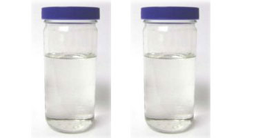
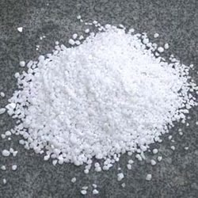

Our Products
Diphenhydramine Hydrochloride/IP/BP/USP [147-24-0]

Information
NAME OF THE PRODUCT : Diphenhydramine Hydrochloride : IP/BP/USP
CAS No: [147-24-0]
Molecular Wt. : 291.82
SPECIFICATIONS :
1. DESCRIPTION : White powder
2. SOLUBILITY : Test passes
3. IDENTIFICATION : Test passes ( IR)
4. APPEARANCE OF SOLUTION : Test passes
5. pH of 5% w/v SOLUTION : LIMIT 4.0 to 6.0
6. SULPHATED ASH : LIMIT MAX 0.1 %
7. LOSS ON DRYING AT 105 degree centi : LIMIT 0.5 %
8. RELATED SUBSTANCES : Test Passes ( HPLC)
9. PURITY BY GC / HPLC / TITRATION : LIMIT 99.0 % to 101.0 %
Methyl Nicotinate/BP/EP [93-60-7] FW 137.14

Information
NAME OF THE PRODUCT : Methyl Nicotinate/BP/EP
CAS No: [93-60-7]
Molecular Wt. : 137.14
SPECIFICATIONS :
1. DESCRIPTION : White crystalline powder with characteristic odor
2. SOLUBILITY : Test passes
3. IDENTIFICATION : Test passes ( IR)
4. RELATED SUBSTANCES : Test passes (HPLC)
5. CHLORIDES : Test passes ( B.P. LIMIT MAX 200 PPM)
6. WATER : Test passes ( B.P. LIMIT MAX 0.5 %)
7. SULPHATED ASH : Test passes ( B.P. LIMIT MAX 0.1 %)
8. PURITY ON UNHYDROUS BASIS : Test passes ( B.P. LIMIT 99.0 % to 101.0 %)
Antimony Potassium Tartarate/USP [28300-74-5] 667.86

information
NAME OF THE PRODUCT : Antimony Potassium Tartarate/USP
CAS No: [28300-74-5]
Molecular Wt. : 667.86
SPECIFICATIONS :
1. DESCRIPTION : White Powder , odorless
2. SOLUBILITY : As per USP requirements.
3. IDENTIFICATION : A) Test Passes , B) Test Passes ,C) Test Passes
4. ACIDITY / AKALINITY : Test Passes
5. ARSENIC : Complies ( less than 0.015 % )
6. LEAD : 0.00020 % ( USP LIMIT LESS THAN 0.002%)
7. LOSS ON DRYING : USP LIMIT MAX 2.7 %
8. PURITY : USP LIMIT 99.0 % to 103. 0 %
Diethyl Carbamazine citrate/IP [1642-54-2] FW 391.42

Information
NAME OF THE PRODUCT : Diethyl Carbamazine citrate ( IP )
CAS No: [1642-54-2]
Molecular Wt. : 391.42
SPECIFICATIONS :
1. DESCRIPTION : White crystalline powder
2. SOLUBILITY :Test passes as per IP
3. IDENTIFICATION : Test passes as per IP
4. ACIDITY / AKALINITY / ACID VALUE : Test passes as per IP
5. PURITY BY GC / HPLC / TITRATION : Test passes as per IP
6. LOSS ON DRYING / MOISTURE BY KF : Test passes as per IP
7. SULPHATED ASH : Test passes as per IP
Chloramphenicol / IP [56-75-7] 323.13

Information
NAME OF THE PRODUCT :Chloramphenicol ( IP )
CAS No: [56-75-7]
Molecular Wt. : 323.13
SPECIFICATIONS :
1. DESCRIPTION : White to grayish white or yellowish white powder
2. SOLUBILITY : Test passes as per IP
3. IDENTIFICATION : A,B,C,D Tests passes as per IP
4. MELTING POINT RANGE : 149 to 153
5. pH : 4.5 to 7.5
6. PURITY BY GC / HPLC / TITRATION : Test passes as per IP
7. LOSS ON DRYING :Not more than 0.5 %
8. RELATED SUBSTANCES :Test passes as per IP
9. SULPHATED ASH : Not more than 0.1%
Ethyl Lactate [687-47-8] FW 118.13
information
NAME OF THE PRODUCT : Ethyl Lactate
CAS No: [687-47-8]
Molecular Wt. : 118.13
SPECIFICATIONS :
1. DESCRIPTION : Colourless liquid with characteristic odor.
2. SOLUBILITY : Miscible with water
3. BOILING POINT : 154
4. PURITY BY GC / HPLC / TITRATION : More than 98
Hydrobromic Acid-48-60% [10035-10-6] FW 80.92

Information
NAME OF THE PRODUCT : Hydrobromic Acid-48-60%
CAS No: [10035-10-6]
Molecular Wt. : 80.92
SPECIFICATIONS :
1. DESCRIPTION : light yellow Clear liquid
2. PURITY : Minimum 48 % to 60 % as per customers requirement.
Palmitoyl Chloride [112-67-4] FW 274.88

Information
NAME OF THE PRODUCT : Palmitoyl Chloride
CAS No: [112-67-4]
Molecular Wt. :274.88
SPECIFICATIONS :
1. DESCRIPTION : Light yellow colored clear liquid
2. PURITY : Minimum 98 %
Lauroyl Chloride [112-16-3] FW 218.77

Information
NAME OF THE PRODUCT : Lauroyl Chloride
CAS No: [112-16-3]
Molecular Wt. : 218.77
SPECIFICATIONS :
1. DESCRIPTION : Clear colourless liquid.
2. PURITY : Minimum 99 %
Sodium Bromide [7647-15-6]
FW 102.90

Information
NAME OF THE PRODUCT : Sodium Bromide
CAS No: [7647-15-6]
Molecular Wt. : 102.90
SPECIFICATIONS :
1. DESCRIPTION : Crystalline Powder.
2. PURITY : Minimum 98.5%
Pottasium Bromide [7758-02-3] FW 119.01

Information
NAME OF THE PRODUCT : Potassium Bromide
CAS No: [7758-02-3]
Molecular Wt. : 119.01
SPECIFICATIONS :
1. DESCRIPTION : Crystalline powder
2. PURITY : Minimum 98.5 %